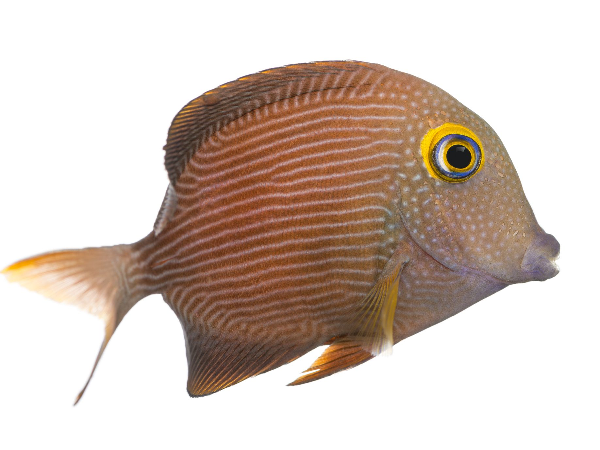
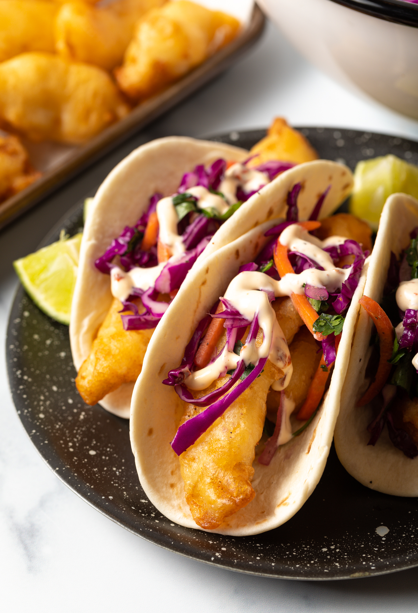

So this is a kind of sandwich called a taco. It comes with flat bread and you put a lil fishy inside. The fish is kind of a tube or chunk shape with crispy outside. I think they come like this out of the ocean, but I'm not sure. It is a very tasty little animule. Anyway, the fishy goes in the cornbread, and you put some crispies on top. Crispy and crunchy things like cabbage and other very nice vegetables. And then you put some tangy sauce on there and eat.
The fishy and crunchy stuff kind of go everywhere, but it is fun! Tie your hair back when you eat, if you are a long-haired cat.